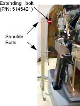
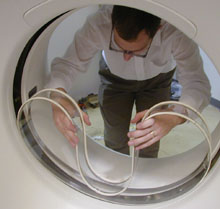

Operating Documentation
Direction 5181166-800, Rev# 7
BrightSpeed Select Service Methods Adv
Operating Documentation |
| Required Persons | Preliminary Reqs | Procedure | Finalization |
|---|---|---|---|
| 1 |
This procedure explains how to remove and re-install the CT Gantry rear cover.
| Item | Qty | Effectivity | Part# | Manufacturer | |
|---|---|---|---|---|---|
| Standard FE Tool Kit | 1 | - | - | - | |
Assemble the rear cover dolly.
Tighten the two (2) shoulder bolts to the rear cover.
Illustration 1: One Side of the Rear Cover Dolly

Fit side dolly through the shoulder bolts and secure assembly with two (2) wing nuts. See Illustration 1
Repeat steps a and b for the other side dolly.
Remove the Mylar (scan) window.
| ELECTROCUTION HAZARD. | |
| HIGH VOLTAGE PRESENT. POTENTIAL FOR INJURY IF COVERS REMOVED AND POWER IS LEFT “ON”. | |
| DISABLE ALL SERVICE SWITCHES PRIOR TO REMOVING REAR COVERS. |
| Always turn OFF the HVDC before the 120 VAC. Turning OFF 120 VAC power before HVDC power can result in equipment damage. | |
Disconnect cables on the right side of the rear cover.
Remove rear cover.
Disengage upper and lower cantrell brackets on both sides of the rear cover.
Using steady but firm pressure, lift each of the lower cantrell brackets from their associated retainers. See Illustration 2.
Illustration 2: Releasing cover brackets

Disengage the locking mechanism on the upper cantrell brackets by using your thumb to slide the trigger (red lever) back. This will release the locking mechanism and allow the cantrell to be rotated upwards with steady and firm pressure.
Disengage the rubber retaining straps on both sides.
Position cover in back of gantry.
Attach the rear cover
Align the studs on both sides of the rear cover with the receivers located on the gantry frame.
Insert the stud on one side into its associated receiver and attach the rubber retaining straps.Then insert the stud on the other side into its associated receiver and attach its rubber retaining straps.
| NOTE: | You may find it helpful to lift "up" on the cover to align the stud while attaching the rubber retaining straps. |
Reattach upper and lower cantrell brackets on both sides.
Remove upper cantrell brackets from service position and rotate them into position over their associated retaining pins. Press down firmly on the bracket and snap it into place. The locking mechanism on each upper bracket should lock the bracket securely into place. Do this on both sides.
Remove lower cantrell brackets from service position and rotate them into position over their associated retaining pins. Press down firmly on the bracket and snap it into place.
| NOTE: | Adjustment of the cantrell brackets can cause misalignment of the top and side covers. The upper and lower cantrell brackets do not require adjust during normal use. |
Remove dolly, disassemble and store safely away.
Reattach cables to cover.
Reinstall the mylar (scan) window. Carefully, bend the scan window and place it into the channel (groove) provided in the covers.
Illustration 3: Installing the mylar window

No finalization required.